Зоосалон OSCAR · Ломоносов
В зале только ваш питомец и один мастер. Без успокоительных уколов и без спешки: делаем паузы, если он устал. Вы забираете ухоженного и спокойного любимца.
5,0 на Яндекс Картах · 126 оценок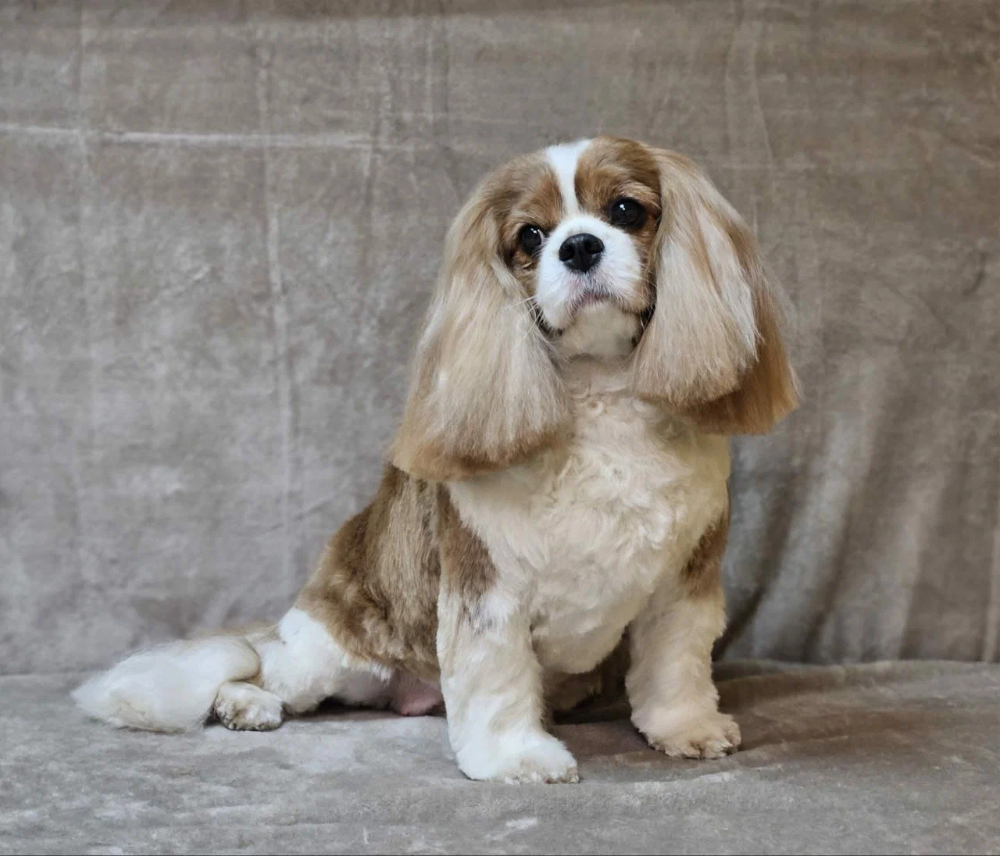
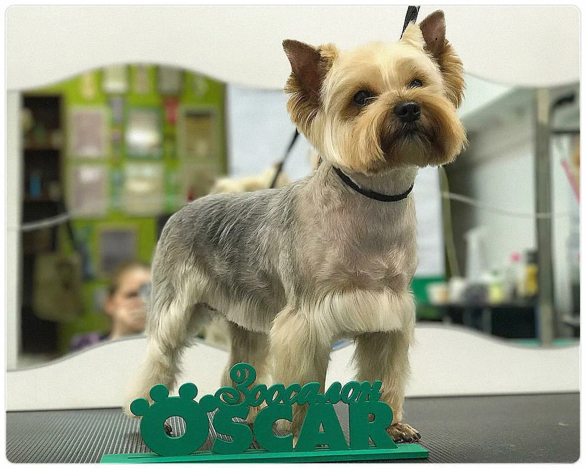
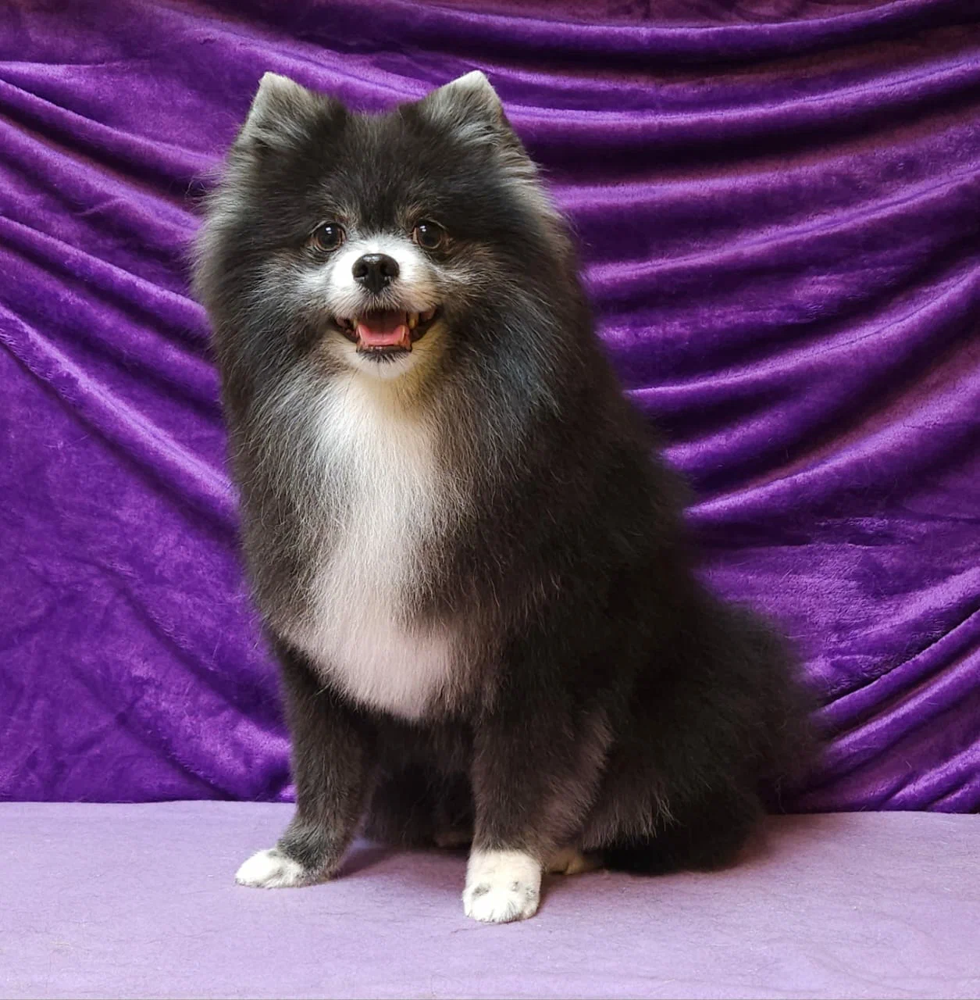
Перед началом мастер осматривает шерсть и кожу и подбирает уход под породу, состояние шерсти и характер питомца.
Мытьё, сушка и стрижка по стандарту породы или так, как нравится вам. Когти, уши и глаза в том же визите.
Отдельное время, когда в зале нет собак. Вычешем подшёрсток, сделаем гигиеническую или модельную стрижку.
Маски и увлажнение для сухой, тусклой или путающейся шерсти. Она становится мягче и легче расчёсывается дома.
Убираем подшёрсток за один визит. Дома заметно меньше шерсти на диване и одежде.
Питомцы наших клиентов после визита в «Оскар».
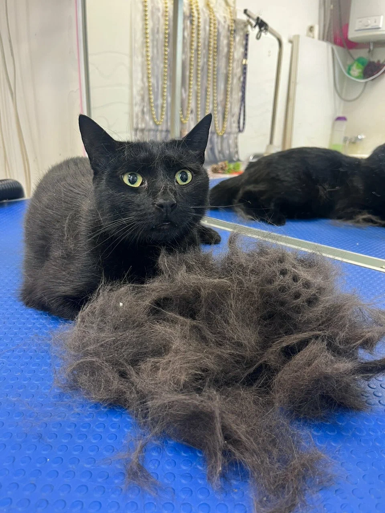
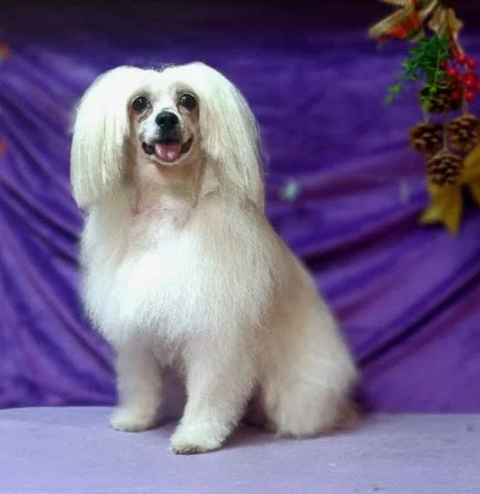
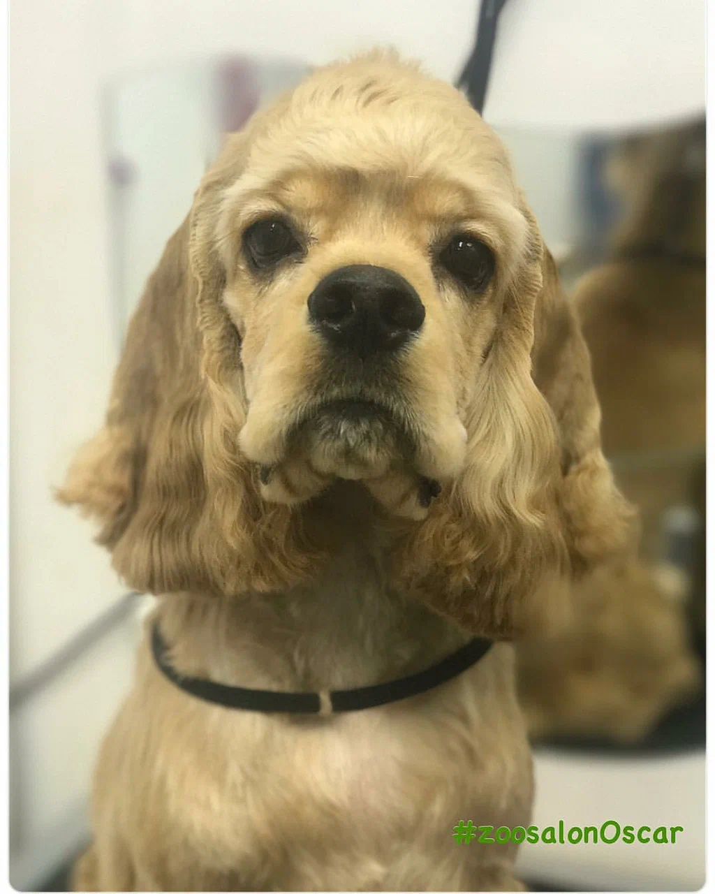
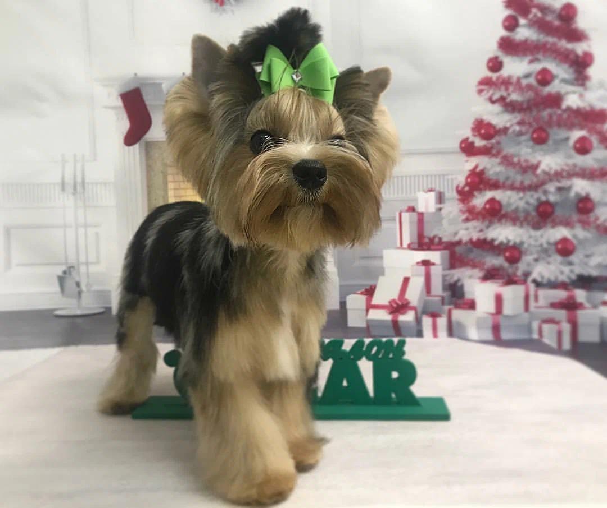
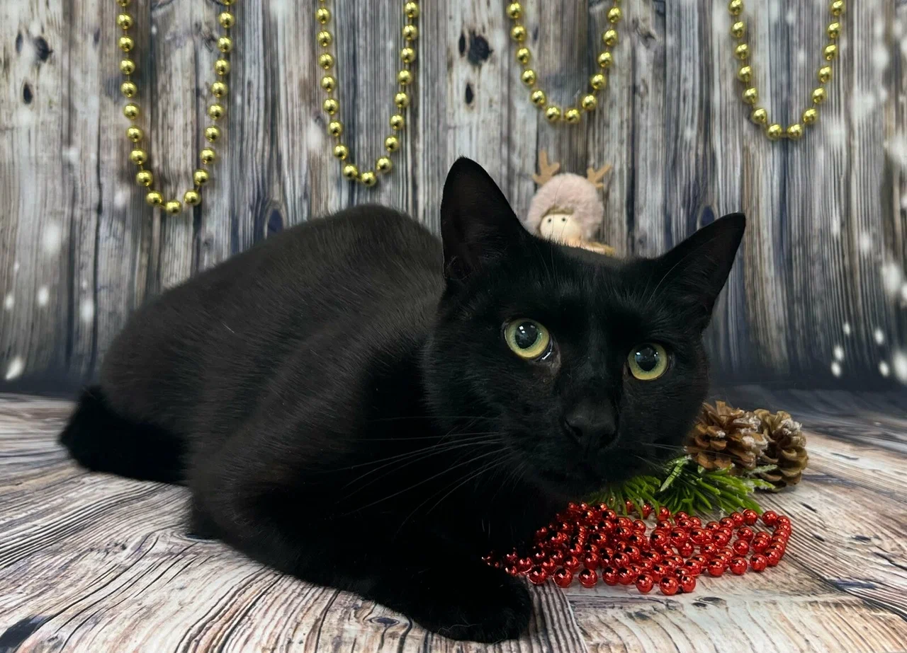
До и после
Один и тот же питомец до визита и после: колтуны разобраны, глаза открыты, форма аккуратная.
Иллюстрация, созданная нейросетью, — пример того, как будет выглядеть блок. Здесь будут 2–3 пары реальных фото работ салона.
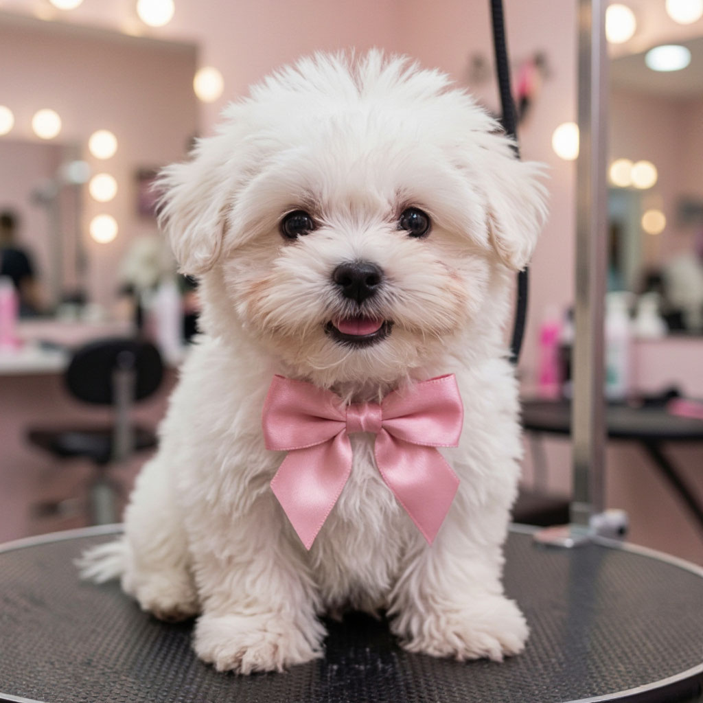
После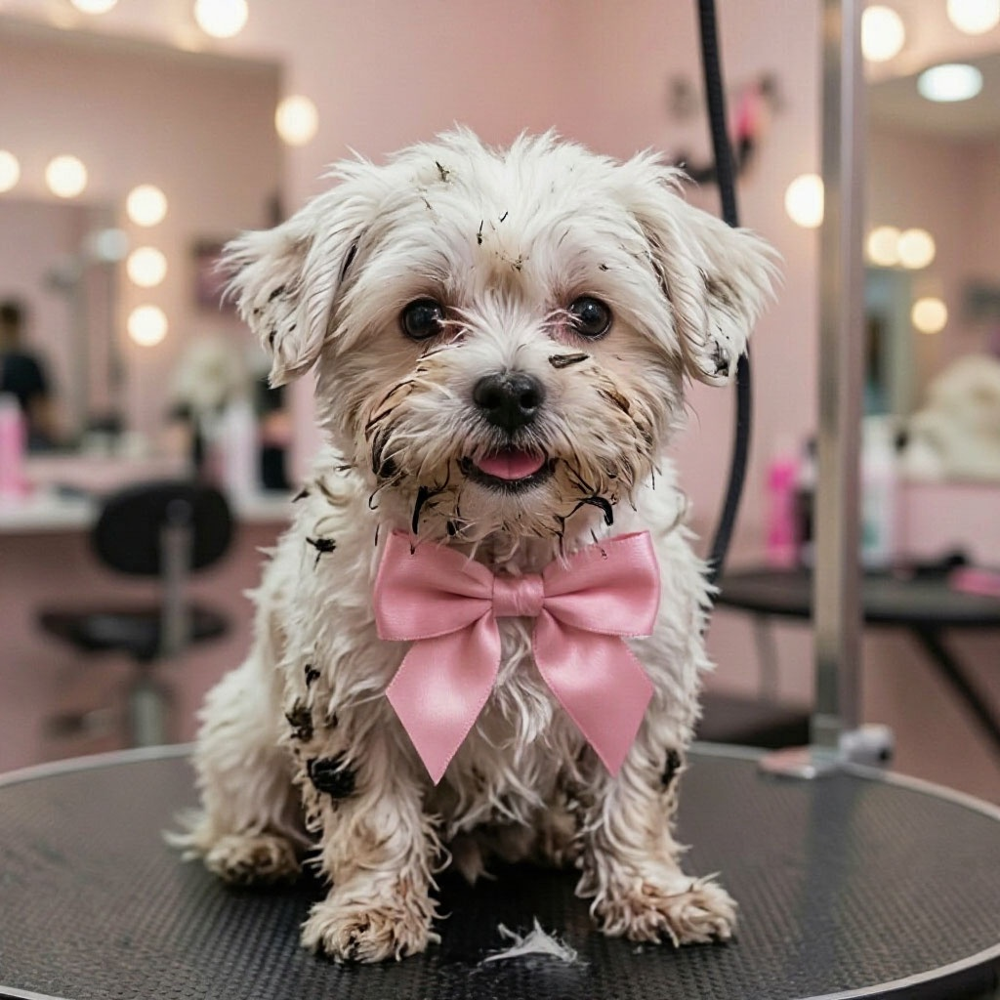
До← тяните → · ИИ-иллюстрация
Наш подход
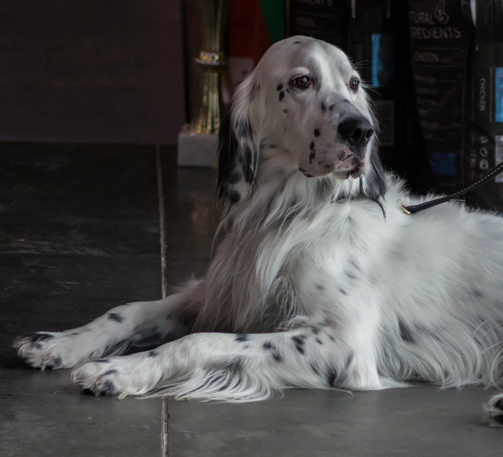
Никаких чужих животных, лая и суеты рядом. Мастер занят только вашим любимцем от начала до конца.
Устал или занервничал — делаем паузу. Пугливым питомцам предлагаем сначала просто познакомиться с залом и мастером.
Подбираем шампуни и кондиционеры под шерсть и чувствительность кожи, а не моем всех одним средством.
Расскажем, в каком состоянии шерсть и кожа, и как ухаживать дома, чтобы результат держался дольше.
Отзывы с Яндекс Карт · 5,0 из 5 · 126 оценок
«Уже посещаем салон 3-й год. До этого перепробовали 5 салонов… Собака не в стрессе, спокойная, её не трясёт, как это было ранее в других салонах».
«Прекрасные грумеры. Ольге отдельное спасибо, сумела найти подход к моему пёсику. Ранее от работы с ним многие мастера отказывались, так как парень с характером».
«Посещаем зоосалон Оскар уже 4 года… Мой паникёр хоть и нервничает, но каждый раз смиренно идёт на все процедуры, все пожелания всегда учтены».
«Огромное спасибо за нашего персика Чифа. Стал прямо неузнаваемый. Мягче, весь чистенький… Прошла неделя после груминга, реально пух по квартире перестал летать».
«Шерсть самоеда — это настоящее испытание… Итог превзошёл ожидания. Шерсть лежит волосок к волоску, но при этом выглядит очень натурально, всё благородно и породно».
«Хочу выразить огромную благодарность хозяйке зоосалона Ксении и мастеру Дарье за их кропотливый труд… Наш пудель просто преобразился после стрижки. Любуемся каждый день».
Клиенты записываются к «своему» мастеру и благодарят их по именам в отзывах.
По отзывам клиентов, сразу находит подход к активным и непоседливым собакам.
Клиенты благодарят за кропотливую работу: после её стрижки пудель «просто преобразился».
Находит подход к собакам с характером, от которых отказывались другие мастера.
Цена зависит от породы, размера и состояния шерсти. Чтобы не гадать по прайсу, пришлите фото питомца — мастер назовёт точную стоимость.
Сбоку и мордочку, при дневном свете. Так мастер увидит длину и состояние шерсти.
На номер +7 911 029-44-99. Напишите породу, возраст и какую услугу хотите.
Мастер назовёт стоимость и предложит удобное время. Если при осмотре что-то изменится, скажем до начала работы.
Не нашли ответ? Спросите при записи, администратор всё расскажет.
Скажите об этом при записи. Мастер работает в спокойном темпе и делает паузы. Для очень пугливых питомцев можно сначала прийти просто познакомиться с залом.
Нет, ни уколов, ни таблеток. Если питомец сильно нервничает, мы остановимся и предложим перенести уход, чтобы не закреплять страх.
Зависит от породы, размера и состояния шерсти. Ориентировочное время назовём при записи, чтобы вы могли спланировать день.
Мастер оценит их при осмотре. Если расчесать без боли не получится, предложим короткую стрижку и заранее скажем, сколько это стоит.
На первом визите — да, если питомцу так спокойнее. Обсудим это при записи.
Запись
Перезвоним, уточним породу и состояние шерсти, назовём цену и предложим свободное время. Или позвоните сами.
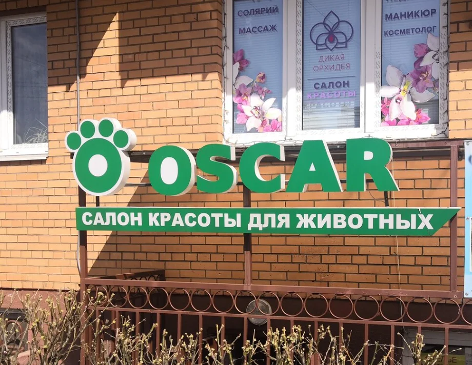